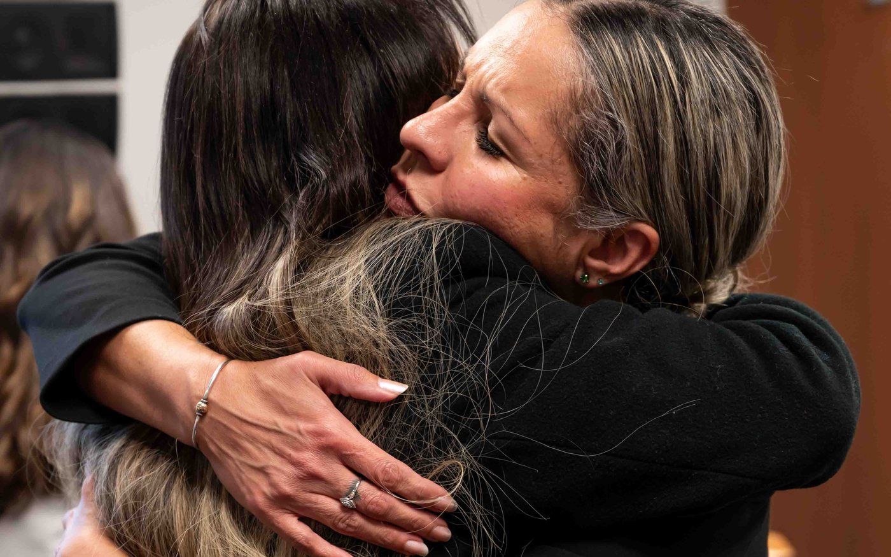
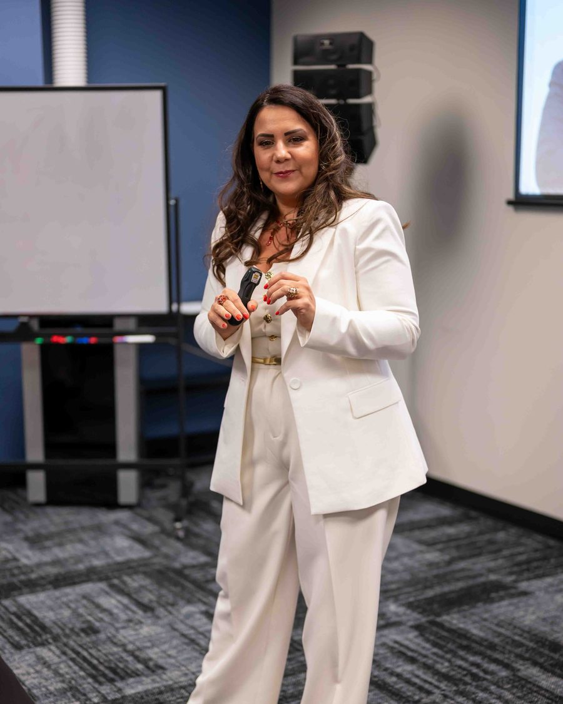
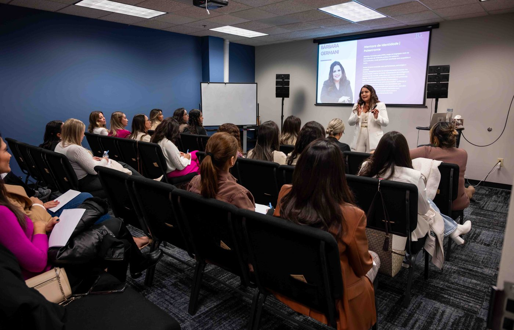
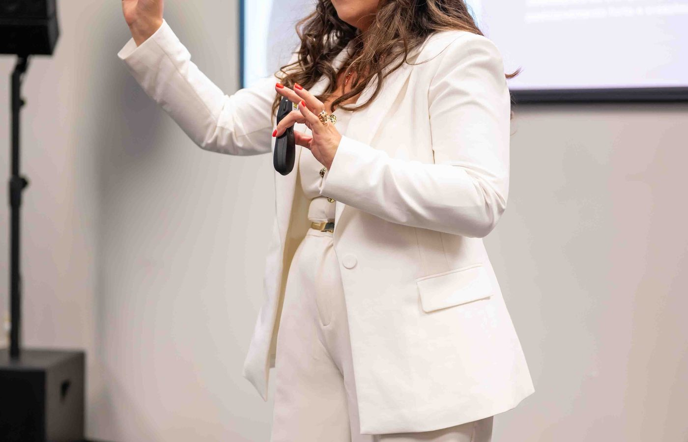

Desprogramação
Quem você precisou se tornar para sobreviver — e quais mecanismos de proteção viraram identidade.
Quem eu precisei me tornar para me sentir segura?
Existe a mulher que você precisou se tornar para atravessar certas fases. E existe a mulher que você é.
Vídeo de apresentação
Você sabe racionalmente o que deveria fazer. Mas continua repetindo emocionalmente aquilo que aprendeu como seguro.Identidade Raiz™
Se eu antecipo tudo, nada me pega de surpresa.
Se eu for fácil de amar, ninguém vai embora.
Se eu entrego, eu existo.
A arquitetura que a gente trabalha
Quem você precisou se tornar para sobreviver — e quais mecanismos de proteção viraram identidade.
Quem eu precisei me tornar para me sentir segura?
De onde vieram esses padrões: crenças, experiências marcantes, lealdades familiares.
De onde vem o que continua governando a minha vida?
A separação entre história e identidade. Não para criar uma personagem nova — para voltar a reconhecer quem você é.
Quem sou eu de verdade?
A transformação interna vira vida prática: decisões, transições, carreira, rotina.
Como escolher e construir a próxima fase?
Como você passa a viver, comunicar e liderar sem voltar ao antigo quando a pressão aumenta.
Como sustento quem eu sou sem me abandonar?
Os cinco movimentos acontecem na ordem — e um sustenta o outro.
Quero viver essa jornadaCompreender
Aprofundar
Aplicar
Integrar
A plataforma abre inteira assim que você entra. Nada de liberação por conta-gotas.
Um ano para assistir no seu ritmo, rever e voltar a etapas conforme o seu momento.
Quinzenais, em grupo, conduzidos pela Bárbara. Não repetem o gravado: aprofundam.
Máscaras da Sobrevivência™, Mapa das Emoções Raiz™, Linha do Tempo, Mapa da Repetição™ e Código Raiz™.
Diário da Identidade, caderno de insights, mapas e exercícios de reflexão e visualização.
O intervalo também faz parte: observar padrões e levar o conteúdo para situações reais.
Entendi que minha dificuldade de me posicionar e dizer não estava ligada a padrões emocionais antigos. Hoje decido com muito mais segurança, minha empresa cresceu e novas oportunidades começaram a surgir.
Você me fez enxergar para dentro e ainda como colocar em ação aquilo que eu quero: e até o que eu nem sabia que queria. Hoje, sem medo, deixo a minha luz brilhar.
Encerro o ciclo de escassez, dúvidas e medos e recomeço com segurança, paz e coragem. Me sinto uma nova mulher. Curada e restaurada.
Assisti agora. Eu já tinha visto antes, mas acho que não estava pronta. Captei muito bem todas as mensagens hoje e como elas encaixam tão bem para me libertar para a felicidade. Muito feliz de ter te encontrado.
Uaaau! Muito bom, essa aula. Obrigada, Bárbara, tenho certeza de que a Imersão será uma bênção.
Fui guiada a uma jornada de autodescoberta que trouxe clareza sobre meus objetivos, motivações e desafios internos. Hoje me sinto mais leve e próspera.


Mentora de identidade, crenças e padrões emocionais.
Passei mais de dez anos em laboratórios farmacêuticos multinacionais antes de entender o que me movia: as pessoas mais competentes que eu conhecia estavam presas em repetições que nenhuma competência resolvia.
Larguei a carreira que estava pronta para seguir e fui estudar o que ninguém tinha me explicado: por que a gente sabe o que precisa fazer e mesmo assim não faz. A resposta não estava na disciplina. Estava na identidade.
Hoje conduzo mentorias entre o Brasil e os Estados Unidos e sou autora de A Origem dos Seus Resultados.
Bárbara Germani
Uma década formando equipes dentro de laboratórios farmacêuticos multinacionais. Nove anos dedicados a comportamento humano. O que eu ensino hoje foi testado em gente de verdade, muito antes de virar página de vendas.



Onde eu aprendi a primeira coisa que sustenta tudo o que faço hoje: a diferença entre o personagem que a pessoa apresenta e a pessoa que está atrás dele.
Dez anos liderando formação de equipes e eventos, vendo de perto que competência técnica não resolve padrão emocional.
Florida Christian University. Presença no InterCoaching & Business em 2018, 2019, 2022, 2023 e 2024.
Treinamentos em mais de quinze cidades norte-americanas. Clientes no Brasil e nos Estados Unidos, e mulheres já atendidas na Espanha, na Inglaterra e em Portugal.
Três anos dentro do universo Febracis, acompanhando de perto um dos trabalhos de desenvolvimento humano mais conhecidos do Brasil. Boa parte do meu repertório sobre identidade e comportamento se formou ali.
Membro acadêmica da ABRACE e condecorada com a Medalha de Mérito Profissional.
Coautora de Nascidas para Vencer e autora de A Origem dos Seus Resultados.
Antes vieram a Essência e a Identidade Feminina, que abriram o caminho. O que está de pé agora é a Raiz, e o treinamento de oratória que nasceu dela.
Especialista no programa SC no Ar, da Rede NDTV, afiliada Record, e entrevistada no Jesus Pod, de Luzia Costa, falando sobre identidade, comportamento e inteligência emocional.
Valor oficial US$ 697 à vista
US$397
Condição especial desta turma · à vista
Dúvida antes de decidir? Fale comigo no WhatsApp.
Você não sustenta uma vida nova a partir da mesma identidade que construiu para sobreviver à vida antiga.Identidade Raiz™
Assim que a inscrição é confirmada você recebe acesso à plataforma com todos os módulos gravados já disponíveis. Não existe liberação progressiva, e você tem 12 meses para percorrer o conteúdo no seu ritmo.
Não. Os encontros existem para aprofundar, aplicar as ferramentas, responder perguntas e direcionar o que você está vivendo para a sua vida real. São 5 encontros online e em grupo, quinzenais, conduzidos por mim.
Vale. O conteúdo gravado é seu por 12 meses e a jornada continua acontecendo entre os encontros. Ainda assim, o meu convite é que você proteja essas datas na agenda: o que acontece ao vivo é parte importante da experiência.
Não e não. A Identidade Raiz é uma mentoria de desenvolvimento pessoal e não substitui psicoterapia, acompanhamento psicológico ou tratamento clínico. Fé faz parte de quem eu sou e respeito a de cada mulher que entra aqui, mas o mecanismo do método é outro: identidade, crenças, padrões emocionais, comportamento, clareza e direção.
A maior parte dos processos trabalha o comportamento — o que você faz. A Identidade Raiz trabalha a estrutura interna que continua produzindo aquele comportamento. É por isso que muita gente que já leu e já se analisou bastante encontra aqui a peça que faltava.
Não. A mentoria é para mulheres em momentos diferentes: empresárias, profissionais, mães, mulheres em transição de fase. O que une o grupo não é a profissão, é o padrão.
Da sobrevivência à consciência.
Da consciência à identidade.
Da identidade a uma nova forma de viver.